전기기능사 (2014-07-20 기출문제)
1과목: 전기 이론
1. 어떤 물질이 정상 상태보다 전자수가 많아져 전기를 띠게 되는 현상을 무엇이라 하는가?
- 충전
- 방전
- 대전
- 분극
(정답률: 96%)

2. 다음 중 전도율을 나타내는 단위는?
- Ω
- Ωㆍm
- ℧ㆍm(모ㆍm)
- ℧/m(모/m)
(정답률: 58%)
3. 비사인파의 일반적인 구성이 아닌 것은?
- 순시파
- 고조파
- 기본파
- 직류파
(정답률: 71%)
4. 자기회로에 기자력을 주면 자로에 자속이 흐른다. 그러나 기자력에 의해 발생되는 자속 전부가 자기회로 내를 통과하는 것이 아니라, 자로 이외의 부분을 통과하는 자속도 있다. 이와 같이 자기회로 이외 부분을 통과하는 자속을 무엇이라 하는가?
- 종속자속
- 누설자속
- 주자속
- 반사자속
(정답률: 84%)
5. 그림에서 C1 = 1 ㎌, C2 = 2 ㎌, C3 = 2 ㎌ 일 때 합성 정전 용량은 몇 ㎌ 인가?
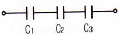
- 1/2
- 1/5
- 3
- 5
(정답률: 60%)
6. 자기력선에 대한 설명으로 옳지 않은 것은?
- 자기장의 모양을 나타낸 선이다.
- 자기력선이 조밀할수록 자기력이 세다.
- 자석의 N극에서 나와 S극으로 들어간다.
- 자기력선이 교차된 곳에서 자기력이 세다.
(정답률: 78%)
7. R(Ω)인 저항 3개가 △결선으로 되어 있는 것을 Y결선으로 환산하면 1상의 저항(Ω)은?
- (1/3)R
- R
- 3R
- 1/R
(정답률: 63%)
8. ωL = 5Ω, 1/ωC = 25Ω 의 LC 직렬회로에서 100 V의 교류를 가할 때 전류(A)는?
- 3.3A, 유도성
- 5A, 유도성
- 3.3A, 용량성
- 5A, 용량성
(정답률: 53%)
9. 전기장 중에 단위 전하를 놓았을 때 그것이 작용하는 힘은 어느 값과 같은가?
- 전장의 세기
- 전하
- 전위
- 전위차
(정답률: 72%)
10. 공기 중에서 5 cm 간격을 유지하고 있는 2개의 평행 도선에 각각 10A의 전류가 동일한 방향으로 흐를 때 도선 1m당 발생하는 힘의 크기(N)는?
- 4 × 10-4
- 2 × 10-5
- 4 × 10-5
- 2 × 10-4
(정답률: 39%)
11. RL 직렬회로에서 임피던스(Z)의 크기를 나타내는 식은?
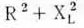
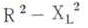
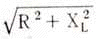
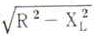
(정답률: 78%)
12. 기전력 1.5V, 내부저항 0.1Ω 인 전지 4개를 직렬로 연결하고 이를 단락했을 때의 단락전류(A)는?
- 10
- 12.5
- 15
- 17.5
(정답률: 86%)
13. 정격전압에서 1kW의 전력을 소비하는 저항에 정격의 90% 전압을 가했을 때, 전력은 몇 W 가 되는가?
- 630W
- 780W
- 810W
- 900W
(정답률: 52%)
14. 다음 물질 중 강자성체로만 짝지어진 것은?
- 철, 니켈, 아연, 망간
- 구리, 비스무트, 코발트, 망간
- 철, 구리, 니켈, 아연
- 철, 니켈, 코발트
(정답률: 79%)
15. 단면적 5cm2, 길이 1m, 비투자율 103인 환상 철심에 600회의 권선을 감고 이것에 0.5A의 전류를 흐르게 한 경우 기자력은?
- 100 AT
- 200 AT
- 300 AT
- 400 AT
(정답률: 62%)
16. 정전용량이 같은 콘덴서 2개를 병렬로 연결하였을 때의 합성 정전용량은 직렬로 접속하였을 때의 몇 배인가?
- 1/4
- 1/2
- 2
- 4
(정답률: 66%)
17. e = 200 sin(100 π t) V의 교류 전압에서 t = 1/600초일 때, 순시값은?
- 100 V
- 173 V
- 200 V
- 346 V
(정답률: 36%)
18. 자체 인덕턴스가 100 H가 되는 코일에 전류를 1초 동안 0.1A 만큼 변화시켰다면 유도기전력(V)은?
- 1 V
- 10 V
- 100V
- 1000V
(정답률: 67%)
19. Y결선에서 선간전압 Vl과 상전압 Vp의 관계는?
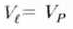
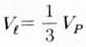
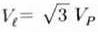
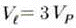
(정답률: 69%)
20. 단상 100V, 800W, 역률 80%인 회로의 리액턴스는 몇 Ω 인가?
- 10
- 8
- 6
- 2
(정답률: 38%)
2과목: 전기 기기
21. 직류 발전기에서 전기자 반작용을 없애는 방법으로 옳은 것은?
- 브러시 위치를 전기적 중성점이 아닌 곳으로 이동시킨다.
- 보극과 보상 권선을 설치한다.
- 브러시의 압력을 조정한다.
- 보극은 설치하되 보상 권선은 설치하지 않는다.
(정답률: 88%)
22. 슬립이 0.⑤이고 전원 주파수가 60Hz인 유도전동기의 회전자 회로의 주파수(Hz)는?
- 1
- 2
- 3
- 4
(정답률: 59%)
23. 동기전동기의 여자전류를 변화시켜도 변하지 않는 것은?(단, 공급전압과 부하는 일정하다.)
- 동기속도
- 역기전력
- 역률
- 전기자 전류
(정답률: 41%)
24. 동기기에서 사용되는 절연재료로 B종 절연물의 온도상승한도는 약 몇[℃] 인가?(단, 기준온도는 공기 중에서 40[℃]이다.)
- 65
- 75
- 90
- 120
(정답률: 60%)
25. 변압기의 1차 권회수 80회, 2차 권회수 320회 일 때 2차측의 전압이 100V이면 1차 전압(V)은?
- 15
- 25
- 50
- 100
(정답률: 72%)
26. 다음 그림에 대한 설명으로 틀린 것은?
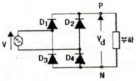
- 브리지(bridge) 회로라고도 한다.
- 실제의 정류기로 널리 사용된다.
- 반파 정류회로라고도 한다.
- 전파 정류회로라고도 한다.
(정답률: 57%)
27. 동기발전기를 회전계자형으로 하는 이유가 아닌 것은?
- 고전압에 견딜수 있게 전기자 권선을 절연하기가 쉽다.
- 전기자 단자에 발생한 고전압을 슬립링 없이 간단하게 외부회로에 인가할 수 있다.
- 기계적으로 튼튼하게 만드는데 용이하다.
- 전기자가 고정되어 있지 않아 제작비용이 저렴하다.
(정답률: 61%)
28. 다음 중 유도전동기에서 비례추이를 할 수 있는 것은?
- 출력
- 2차 동손
- 효율
- 역률
(정답률: 53%)
29. 어떤 변압기에서 임피던스 강하가 5[%]인 변압기가 운전중 단락되었을 때 그 단락전류는 정격전류의 몇 배인가?
- 5
- 20
- 50
- 200
(정답률: 83%)
30. 직권 발전기의 설명 중 틀린 것은?
- 계자권선과 전기자권선이 직렬로 접속되어 있다.
- 승압기로 사용되며 수전 전압을 일정하게 유지하고자 할 때 사용된다.
- 단자전압을 V, 유기 기전력을 E, 부하전류를 I, 전기자 저항 및 직권 계자저항을 각각 ra, rs라 할 때 V = E + I(ra+rs)[V] 이다.
- 부하전류에 의해 여자 되므로 무부하시 자기여자에 의한 전압확립은 일어나지 않는다.
(정답률: 48%)
31. 50Hz, 6극인 3상 유도전동기의 전부하에서 회전수가 955 rpm 일 때 슬립(%)은?
- 4
- 4.5
- 5
- 5.5
(정답률: 63%)
32. 전기 철도에 사용하는 직류전동기로 가장 적합한 전동기는?
- 분권전동기
- 직권전동기
- 가동 복권전동기
- 차동 복권전동기
(정답률: 60%)
33. 주상변압기의 고압측에 탭을 여러개 만드는 이유는?
- 역률 개선
- 단자 고장 대비
- 선로 전류 조정
- 선로 전압 조정
(정답률: 60%)
34. 회전수 1728 rpm인 유도전동기의 슬립(%)은?(단, 동기속도는 1800 rpm이다.)
- 2
- 3
- 4
- 5
(정답률: 69%)
35. 변압기 내부고장 시 급격한 유류 또는 gas의 이동이 생기면 동작하는 브흐홀츠 계전기의 설치 위치는?
- 변압기 본체
- 변압기의 고압측 부싱
- 컨서베이터 내부
- 변압기 본체와 컨서베이터를 연결하는 파이프
(정답률: 77%)
36. 전기기계에 있어 와전류손(eddy current loss)을 감소하기 위한 적합한 방법은?
- 규소강판에 성층철심을 사용한다.
- 보상권선을 설치한다.
- 교류전원을 사용한다.
- 냉각 압연한다.
(정답률: 70%)
37. 3상 380V, 60Hz, 4P, 슬립 5%, 55kW 유도전동기가 있다. 회전자속도는 몇 [rpm] 인가?
- 1200
- 1526
- 1710
- 2280
(정답률: 67%)
38. 동기 전동기의 자기 기동법에서 계자권선을 단락하는 이유는?
- 기동이 쉽다.
- 기동권선으로 이용
- 고전압 유도에 의한 절연파괴 위험 방지
- 전기자 반작용을 방지한다.
(정답률: 58%)
39. 3권선 변압기에 대한 설명으로 옳은 것은?
- 한 개의 전기회로에 3개의 자기회로로 구성되어 있다.
- 3차권선에 조상기를 접속하여 송전선의 전압조정과 역률개선에 사용된다.
- 3차권선에 단권변압기를 접속하여 송전선의 전압조정에 사용된다.
- 고압배전선의 전압을 10% 정도 올리는 승압용이다.
(정답률: 52%)
40. 3상 동기전동기의 출력(P)을 부하각으로 나타낸 것은?(단, V는 1상 단자전압, E는 역기전력, Xs는 동기 리액턴스, δ는 부하각이다.)
- P = 3VEsinδ[W]
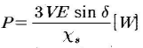
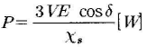
- P=3VEcosδ[W]
(정답률: 45%)
3과목: 전기 설비
41. 배전반 및 분전반의 설치 장소로 적합하지 않은 곳은?
- 접근이 어려운 장소
- 전기회로를 쉽게 조작할 수 있는 장소
- 개폐기를 쉽게 개폐할 수 있는 장소
- 안정된 장소
(정답률: 81%)
42. 금속 전선관 작업에서 나사를 낼 때 필요한 공구는 어느 것인가?
- 파이프 벤더
- 볼트클리퍼
- 오스터
- 파이프 렌치
(정답률: 75%)
43. 무대, 오케스트라박스 등 흥행장의 저압 옥내배선 공사의 사용전압은 몇 V 미만인가?
- 200
- 300
- 400
- 600
(정답률: 75%)
44. 사용전압 400V 이상, 건조한 장소로 점검할 수 있는 은폐된 곳에 저압 옥내배선 시 공사할 수 있는 방법은?
- 합성수지 몰드공사
- 금속 몰드공사
- 버스 덕트공사
- 라이팅 덕트공사
(정답률: 41%)
45. 단선의 직선접속 시 트위스트 접속을 할 경우 적합하지 않은 전선규격(mm2)은?
- 2.5
- 4.0
- 6.0
- 10
(정답률: 55%)
46. 고압 가공전선로의 지지물 중 지선을 사용해서는 안되는 것은?
- 목주
- 철탑
- A종 철주
- A종 철근콘크리트주
(정답률: 84%)
47. 고압전로에 지락사고가 생겼을 때 지락전류를 검출하는데 사용하는 것은?
- CT
- ZCT
- MOF
- PT
(정답률: 61%)
48. 과전류차단기 A종 퓨즈로 정격전류의 몇 %에 용단되지 않아야 하는가?
- 110
- 120
- 130
- 140
(정답률: 56%)
49. 라이팅덕트를 조영재에 따라 부착할 경우 지지점간의 거리는 몇 m 이하로 하여야 하는가?
- 1.0
- 1.2
- 1.5
- 2.0
(정답률: 47%)
50. 인입용 비닐절연전선의 공칭단면적 8mm2 되는 연선의 구성은 소선의 지름이 1.2mm 일 때 소선수는 몇 가닥으로 되어 있는가?
- 3
- 4
- 6
- 7
(정답률: 34%)
51. 지지물의 지선에 연선을 사용하는 경우 소선 몇 가닥 이상의 연선을 사용하는가?
- 1
- 2
- 3
- 4
(정답률: 57%)
52. 전기공사 시공에 필요한 공구사용법 설명 중 잘못된 것은?
- 콘크리트의 구멍을 뚫기 위한 공구로 타격용 임팩트 전기드릴을 사용 한다.
- 스위치박스에 전선관용 구멍을 뚫기 위해 녹아웃 펀치를 사용한다.
- 합성수지 가요전선관의 굽힘 작업을 위해 토치 램프를 사용 한다.
- 금속 전선관의 굽힘 작업을 위해 파이프 밴더를 사용 한다.
(정답률: 59%)
53. 화약고 등의 위험장소에서 전기설비 시설에 관한 내용으로 옳은 것은?
- 전로의 대지전압을 400V 이하 일 것
- 전기기계기구는 전폐형을 사용할 것
- 화약고내의 전기설비는 화약고 장소에 전용개폐기 및 과전류차단기를 시설할 것
- 개폐기 및 과전류차단기에서 화약고 인입구까지의 배선은 케이블 배선으로 노출로 시설할 것
(정답률: 36%)
54. 네온 변압기를 넣는 외함의 접지공사는?(관련 규정 개정전 문제로 여기서는 기존 정답인 4번을 누르면 정답 처리됩니다. 자세한 내용은 해설을 참고하세요.)
- 제1종
- 제2종
- 특별 제3종
- 제3종
(정답률: 70%)
55. 특고압(22.9kV-Y) 가공전선로의 완금 접지 시 접지선은 어느 곳에 연결하여야 하는가?
- 변압기
- 전주
- 지선
- 중성선
(정답률: 52%)
56. 풀용 수중조명등을 넣는 용기의 금속제 부분은 몇 종 접지를 하여야 하는가?(관련 규정 개정전 문제로 여기서는 기존 정답인 4번을 누르면 정답 처리됩니다. 자세한 내용은 해설을 참고하세요.)
- 제1종 접지
- 제2종 접지
- 제3종 접지
- 특별 제3종 접지
(정답률: 62%)
57. 전선접속 시 S형 슬리브 사용에 대한 설명으로 틀린 것은?
- 전선의 끝은 슬리브의 끝에서 조금 나오는 것이 바람직
- 슬리브 전선의 굵기에 적합한 것을 선정한다.
- 열린 쪽 홈의 측면을 고르게 눌러서 밀착시킨다.
- 단선은 사용가능하나 연선접속 시에는 사용 안한다.
(정답률: 56%)
58. 저압 연접인입선의 시설과 관련된 설명으로 잘못된 것은?
- 옥내를 통과하지 아니할 것
- 전선의 굵기는 1.5mm2 이하 일 것
- 폭 5m를 넘는 도로를 횡단하지 아니할 것
- 인입선에서 분기하는 점으로부터 100m를 넘는 지역에 미치지 아니할 것
(정답률: 56%)
59. 알루미늄전선과 전기기계기구 단자의 접속 방법으로 틀린 것은?
- 전선을 나사로 고정하는 경우 나사가 진동 등으로 헐거워질 우려가 있는 장소는 2중 너트 등을 사용할 것
- 전선에 터미널러그 등을 부착하는 경우는 도체에 손상을 주지 않도록 피복을 벗길 것
- 나사 단자에 전선을 접속하는 경우는 전선을 나사의 홈에 가능한 한 밀착하여 3/4 바퀴 이상 1바퀴 이하로 감을 것
- 누름나사단자 등에 전선을 접속하는 경우는 전선을 단자 깊이의 2/3 위치까지만 삽입할 것
(정답률: 42%)
60. 저압 옥내용 기기에 제3종 접지공사를 하는 주된 목적은?(관련 규정 개정전 문제로 여기서는 기존 정답인 3번을 누르면 정답 처리됩니다. 자세한 내용은 해설을 참고하세요.)
- 이상 전류에 의한 기기의 손상 방지
- 과전류에 의한 감전 방지
- 누전에 의한 감전 방지
- 누전에 의한 기기의 손상 방지
(정답률: 70%)
2. "방전"이란 전기가 대지로 혹은 저항이 작은 곳으로 일시에 이동 한다는 의미.
3. "대전"이란 특정 2개의 물체를 마찰 시키면 두 물체 사이에 +와 -전기를 띠는 현상이다.
4. "분극"이란 양전하와 음전하가 같은 위치에 있지 않는 상태이다.